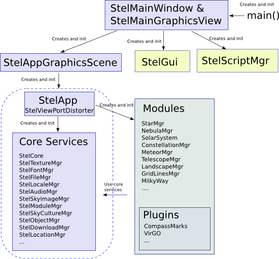

Stellarium Developers Documentation
0.10.1
This documentation concerns the inner workings of Stellarium. This documentation is targetted at developers of scripts, plugins and the core program.
The code of Stellarium is split into several main blocks:
-
the main loop and main widget classes StelMainWindow, StelMainGraphicsView and StelAppGraphicsScene. Those classes have a single instance which is created at startup by the the main() function. They perform various tasks such as the creation of the main program window and openGL context, the creation of the stellarium core, the creation of the GUI. After initialization, they manage user's input event propagation and event loop. There are heavily based on Qt features.
-
the core which provides a number of generic services and features to the other components. The main class is the StelApp singleton class which is used everywhere in the code to access other elements. It is the StelApp instance which creates all the main core services and modules at initialization. Example services are OpenGL textures management with the StelTextureMgr, font management with the StelFontMgr, sky images management (images which have a fixed position in the sky) with the StelSkyImageMgr etc.. Two especially important manager classes (the ones with the "Mgr" suffix) are the StelModuleMgr and StelCore classes: the first one manages the collection of StelModule instances which are registered in the program (see next point for more info on what a StelModule is). The second one provides performance critical features for rendering various elements using openGL, or for computing coordinate transformation and other mathematical services.
-
a collection of StelModule instances which display the main elements of the program such as planets and stars. Each StelModule should be registered to the StelModuleMgr. Because many components of Stellarium derive from the StelModule class, it is possible for the main loop to treat them generically by calling their standard methods such StelModule::update() and StelModule::draw() at each program iteration. It also allows other program components to access them by name. StelModule can also be loaded dynamically by Stellarium, which is the standard way of creating Plugins.
-
the Graphical User Interface (StelGui). It is based on styled Qt widgets which are rendered directly in the openGL window. Users actions trigger signals which are connected to core and StelModules slots.
-
the script engine (StelScriptMgr) allows scripts to calls slots from the core and StelModules slots.

Stellarium uses the
QT Scripting Engine. The basic scripting language is
ECMAScript, which is related to Javascript.
Authors of Stellarium scripts may use application specific functions from the following places:
- The public slots in the class StelMainScriptAPI. These are available in the scripting engine via the object named "core". For example, to access StelMainScriptAPI::wait() from a script, the author would use the scripting command: core.wait(...);
 1.5.5
1.5.5